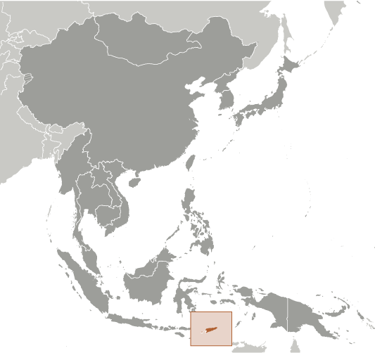

East & Southeast Asia :: TIMOR-LESTE
Introduction :: TIMOR-LESTE
-
The Portuguese began to trade with the island of Timor in the early 16th century and colonized it in mid-century. Skirmishing with the Dutch in the region eventually resulted in an 1859 treaty in which Portugal ceded the western portion of the island. Imperial Japan occupied Portuguese Timor from 1942 to 1945, but Portugal resumed colonial authority after the Japanese defeat in World War II. East Timor declared itself independent from Portugal on 28 November 1975 and was invaded and occupied by Indonesian forces nine days later. It was incorporated into Indonesia in July 1976 as the province of Timor Timur (East Timor). An unsuccessful campaign of pacification followed over the next two decades, during which an estimated 100,000 to 250,000 people died. In an August 1999 UN-supervised popular referendum, an overwhelming majority of the people of Timor-Leste voted for independence from Indonesia. However, in the next three weeks, anti-independence Timorese militias - organized and supported by the Indonesian military - commenced a large-scale, scorched-earth campaign of retribution. The militias killed approximately 1,400 Timorese and forced 300,000 people into western Timor as refugees. Most of the country's infrastructure, including homes, irrigation systems, water supply systems, and schools, and nearly all of the country's electrical grid were destroyed. On 20 September 1999, Australian-led peacekeeping troops deployed to the country and brought the violence to an end. On 20 May 2002, Timor-Leste was internationally recognized as an independent state.In 2006, internal tensions threatened the new nation's security when a military strike led to violence and a breakdown of law and order. At Dili's request, an Australian-led International Stabilization Force (ISF) deployed to Timor-Leste, and the UN Security Council established the UN Integrated Mission in Timor-Leste (UNMIT), which included an authorized police presence of over 1,600 personnel. The ISF and UNMIT restored stability, allowing for presidential and parliamentary elections in 2007 in a largely peaceful atmosphere. In February 2008, a rebel group staged an unsuccessful attack against the president and prime minister. The ringleader was killed in the attack, and most of the rebels surrendered in April 2008. Since the attack, the government has enjoyed one of its longest periods of post-independence stability, including successful 2012 elections for both the parliament and president and a successful transition of power in February 2015. In late 2012, the UN Security Council ended its peacekeeping mission in Timor-Leste and both the ISF and UNMIT departed the country.
Geography :: TIMOR-LESTE
-
Southeastern Asia, northwest of Australia in the Lesser Sunda Islands at the eastern end of the Indonesian archipelago; note - Timor-Leste includes the eastern half of the island of Timor, the Oecussi (Ambeno) region on the northwest portion of the island of Timor, and the islands of Pulau Atauro and Pulau Jaco8 50 S, 125 55 ESoutheast Asiatotal: 14,874 sq kmland: 14,874 sq kmwater: 0 sq kmcountry comparison to the world: 160slightly larger than Connecticuttotal: 253 kmborder countries (1): Indonesia 253 km706 kmterritorial sea: 12 nmcontiguous zone: 24 nmexclusive fishing zone: 200 nmtropical; hot, humid; distinct rainy and dry seasonsmountainousmean elevation: NAelevation extremes: lowest point: Timor Sea, Savu Sea, and Banda Sea 0 mhighest point: Foho Tatamailau 2,963 mgold, petroleum, natural gas, manganese, marbleagricultural land: 25.1%arable land 10.1%; permanent crops 4.9%; permanent pasture 10.1%forest: 49.1%other: 25.8% (2011 est.)350 sq km (2012)most of the population concentrated in the western third of the country, particularly around Dilifloods and landslides are common; earthquakes; tsunamis; tropical cycloneswidespread use of slash and burn agriculture has led to deforestation and soil erosionparty to: Biodiversity, Climate Change, Climate Change-Kyoto Protocol, Desertificationsigned, but not ratified: none of the selected agreementsTimor comes from the Malay word for "east"; the island of Timor is part of the Malay Archipelago and is the largest and easternmost of the Lesser Sunda Islands
People and Society :: TIMOR-LESTE
-
1,291,358 (July 2017 est.)country comparison to the world: 157noun: Timoreseadjective: TimoreseAustronesian (Malayo-Polynesian) (includes Tetun, Mambai, Tokodede, Galoli, Kemak, Baikeno), Melanesian-Papuan (includes Bunak, Fataluku, Bakasai), small Chinese minorityTetun Prasa 30.6%, Mambai 16.6%, Makasai 10.5%, Tetun Terik 6.1%, Baikenu 5.9%, Kemak 5.8%, Bunak 5.5%, Tokodede 4%, Fataluku 3.5%, Waima'a 1.8%, Galoli 1.4%, Naueti 1.4%, Idate 1.2%, Midiki 1.2%, other 4.5%note: data represent population by mother tongue; Tetun and Portuguese are official languages; Indonesian and English are working languages; there are about 32 indigenous languagesRoman Catholic 97.6%, Protestant/Evangelical 2%, Muslim 0.2%, other 0.2% (2015 est.)0-14 years: 40.91% (male 271,623/female 256,733)15-24 years: 20.32% (male 133,254/female 129,166)25-54 years: 29.95% (male 185,911/female 200,903)55-64 years: 4.94% (male 32,168/female 31,680)65 years and over: 3.87% (male 23,924/female 25,996) (2017 est.)total dependency ratio: 90.3youth dependency ratio: 83.7elderly dependency ratio: 6.6potential support ratio: 15.2 (2015 est.)total: 18.9 yearsmale: 18.3 yearsfemale: 19.6 years (2017 est.)country comparison to the world: 2052.36% (2017 est.)country comparison to the world: 2833.4 births/1,000 population (2017 est.)country comparison to the world: 275.9 deaths/1,000 population (2017 est.)country comparison to the world: 171-3.9 migrant(s)/1,000 population (2017 est.)country comparison to the world: 182most of the population concentrated in the western third of the country, particularly around Diliurban population: 34% of total population (2017)rate of urbanization: 3.63% annual rate of change (2015-20 est.)DILI (capital) 228,000 (2014)at birth: 1.07 male(s)/female0-14 years: 1.06 male(s)/female15-24 years: 1.03 male(s)/female25-54 years: 0.93 male(s)/female55-64 years: 1.04 male(s)/female65 years and over: 0.91 male(s)/femaletotal population: 1.01 male(s)/female (2016 est.)22.1 yearsnote: median age at first birth among women 25-29 (2009/10 est.)215 deaths/100,000 live births (2015 est.)country comparison to the world: 50total: 35.1 deaths/1,000 live birthsmale: 37.9 deaths/1,000 live birthsfemale: 32.1 deaths/1,000 live births (2017 est.)country comparison to the world: 54total population: 68.4 yearsmale: 66.8 yearsfemale: 70.1 years (2017 est.)country comparison to the world: 1664.79 children born/woman (2017 est.)country comparison to the world: 1622.3% (2009/10)1.5% of GDP (2014)country comparison to the world: 1920.08 physicians/1,000 population (2011)5.9 beds/1,000 population (2010)improved:urban: 95.2% of populationrural: 60.5% of populationtotal: 71.9% of populationunimproved:urban: 4.8% of populationrural: 39.5% of populationtotal: 28.1% of population (2015 est.)improved:urban: 69% of populationrural: 26.8% of populationtotal: 40.6% of populationunimproved:urban: 31% of populationrural: 73.2% of populationtotal: 59.4% of population (2015 est.)NANANAdegree of risk: very highfood or waterborne diseases: bacterial diarrhea, hepatitis A, and typhoid fevervectorborne diseases: dengue fever and malaria (2016)3.8% (2016)country comparison to the world: 19037.7% (2013)country comparison to the world: 17.9% of GDP (2014)country comparison to the world: 7definition: age 15 and over can read and writetotal population: 67.5%male: 71.5%female: 63.4% (2015 est.)total: 13 yearsmale: 14 yearsfemale: 13 years (2010)total: 11.1%male: 11.1%female: 20% (2010 est.)country comparison to the world: 79
Government :: TIMOR-LESTE
-
conventional long form: Democratic Republic of Timor-Lesteconventional short form: Timor-Lestenote: pronounced TEE-mor LESS-taylocal long form: Republika Demokratika Timor Lorosa'e [Tetum]; Republica Democratica de Timor-Leste [Portuguese]local short form: Timor Lorosa'e [Tetum]; Timor-Leste [Portuguese]former: East Timor, Portuguese Timoretymology: "timor" derives from the Indonesian and Malay word "timur" meaning "east"; "leste" is the Portuguese word for "east", so "Timor-Leste" literally means "Eastern-East"; the local [Tetum] name "Timor Lorosa'e" translates as "East Rising Sun"semi-presidential republicname: Diligeographic coordinates: 8 35 S, 125 36 Etime difference: UTC+9 (14 hours ahead of Washington, DC, during Standard Time)13 administrative districts; Aileu, Ainaro, Baucau, Bobonaro (Maliana), Cova-Lima (Suai), Dili, Ermera (Gleno), Lautem (Los Palos), Liquica, Manatuto, Manufahi (Same), Oecussi (Ambeno), Viquequenote: administrative divisions have the same names as their administrative centers (exceptions have the administrative center name following in parentheses)20 May 2002 (from Indonesia); note - 28 November 1975 was the date independence was proclaimed from Portugal; 20 May 2002 was the date of international recognition of Timor-Leste's independence from IndonesiaRestoration of Independence Day, 20 May (2002); Proclamation of Independence Day, 28 November (1975)drafted 2001, approved 22 March 2002, entered into force 20 May 2002 (2016)civil law system based on the Portuguese model; note - penal and civil law codes to replace the Indonesian codes were passed by Parliament and promulgated in 2009 and 2011, respectivelyaccepts compulsory ICJ jurisdiction with reservations; accepts ICCt jurisdictioncitizenship by birth: nocitizenship by descent only: at least one parent must be a citizen of Timor-Lestedual citizenship recognized: noresidency requirement for naturalization: 10 years17 years of age; universalchief of state: President Francisco GUTERRES (since 20 May 2017); note - the president plays a largely symbolic role but is the commander in chief of the military and is able to veto legislation, dissolve parliament, and call national electionshead of government: Prime Minister Mari ALKATIRI (since 15 September 2017)cabinet: Council of Ministers proposed by the prime minister and appointed by the presidentelections/appointments: president directly elected by absolute majority popular vote in 2 rounds if needed for a 5-year term (eligible for a second term); election last held on 20 March 2017 (next to be held in 2022); following parliamentary elections, the president appoints the leader of the majority party or majority coalition as the prime ministerelection results: Francisco GUTERRES elected president on 20 March 2017; percent of vote - Francisco GUTERRES (FRETILIN) 57.1%, Antonio DA CONCEICAO (PD) 32.5%, Jose Luis GUTERRES (Frenti-Mudanca) 2.6%, Jose NEVES (independent) 2.3%, Luis Alves TILMAN (independent) 2.2%, other 3.4%description: unicameral National Parliament (65 seats; members directly elected in a single nationwide constituency by proportional representation vote to serve 5-year terms)elections: elections were held on 22 July 2017 (next to be held in July 2022)election results: percent of vote by party - FRETILIN 29.7%, CNRT 29.5%, PLP 10.6%, PD 9.8%, KHUNTO 6.4%, other 14%; seats by party - FRETILIN 23, CNRT 22, PLP 8, PD 7, KHUNTO 5highest court(s): Supreme Court of Justice (consists of the court president and NA judges)judge selection and term of office: Supreme Court president appointed by the president of the republic from among the other court judges to serve a 4-year term; other Supreme Court judges appointed - 1 by the Parliament and the others by the Supreme Council for the Judiciary, a body presided by the Supreme Court president and includes mostly presidential and parliamentary appointees; other Supreme Court judges appointed for lifesubordinate courts: Court of Appeal; High Administrative, Tax, and Audit Court; district courts; magistrates' courts; military courtsnote: the UN Justice System Programme, launched in 2003 in 4 phases through 2018, is helping strengthen the country's justice system; the Programme is aligned with the country's long-range Justice Sector Strategic Plan, which includes legal reformDemocratic Party or PDFrenti-Mudanca [Jose Luis GUTERRES]Kmanek Haburas Unidade Nasional Timor Oan or KHUNTONational Congress for Timorese Reconstruction or CNRT [Kay Rala Xanana GUSMAO]People's Liberation Party or PLP [Taur Matan RUAK]Revolutionary Front of Independent Timor-Leste or FRETILIN [Mari ALKATIRI]NAACP, ADB, AOSIS, ARF, ASEAN (observer), CPLP, EITI (compliant country), FAO, G-77, IBRD, ICAO, ICCt, ICRM, IDA, IFAD, IFC, IFRCS, ILO, IMF, IMO, Interpol, IOC, IOM, IPU, ITU, MIGA, NAM, OPCW, PIF (observer), UN, UNCTAD, UNESCO, UNIDO, Union Latina, UNWTO, UPU, WCO, WHO, WMOchief of mission: Ambassador Domingos Sarmento ALVES (since 21 May 2014)chancery: 4201 Connecticut Avenue NW, Suite 504, Washington, DC 20008telephone: [1] (202) 966-3202FAX: [1] (202) 966-3205chief of mission: Ambassador Karen STANTON (since 16 January 2015)embassy: Avenida de Portugal, Praia dos Coqueiros, Dilimailing address: US Department of State, 8250 Dili Place, Washington, DC 20521-8250telephone: (670) 332-4684FAX: (670) 331-3206red with a black isosceles triangle (based on the hoist side) superimposed on a slightly longer yellow arrowhead that extends to the center of the flag; a white star - pointing to the upper hoist-side corner of the flag - is in the center of the black triangle; yellow denotes the colonialism in Timor-Leste's past; black represents the obscurantism that needs to be overcome; red stands for the national liberation struggle; the white star symbolizes peace and serves as a guiding lightMount Ramelau; national colors: red, yellow, black, whitename: "Patria" (Fatherland)lyrics/music: Fransisco Borja DA COSTA/Afonso DE ARAUJOnote: adopted 2002; the song was first used as an anthem when Timor-Leste declared its independence from Portugal in 1975; the lyricist, Fransisco Borja DA COSTA, was killed in the Indonesian invasion just days after independence was declared
Economy :: TIMOR-LESTE
-
Since independence in 1999, Timor-Leste has faced great challenges in rebuilding its infrastructure, strengthening the civil administration, and generating jobs for young people entering the work force. The development of offshore oil and gas resources has greatly supplemented government revenues. This technology-intensive industry, however, has done little to create jobs in part because there are no production facilities in Timor-Leste. Gas is currently piped to Australia for processing, but Timor-Leste has expressed interest in developing a domestic processing capacity.In June 2005, the National Parliament unanimously approved the creation of the Timor-Leste Petroleum Fund to serve as a repository for all petroleum revenues and to preserve the value of Timor-Leste's petroleum wealth for future generations. The Fund held assets of $16 billion, as of mid-2016. Oil accounts for over 90% of government revenues, and the drop in the price of oil in 2014-16 has led to concerns about the long-term sustainability of government spending. Timor-Leste compensated for the decline in price by exporting more oil. The Ministry of Finance maintains that the Petroleum Fund is sufficient to sustain government operations for the foreseeable future.Annual government budget expenditures increased markedly between 2009 and 2012 but dropped significantly through 2016. Historically, the government failed to spend as much as its budget allowed. The government has focused significant resources on basic infrastructure, including electricity and roads, but limited experience in procurement and infrastructure building has hampered these projects. The underlying economic policy challenge the country faces remains how best to use oil-and-gas wealth to lift the non-oil economy onto a higher growth path and to reduce poverty.$6.597 billion (2016 est.)$7.093 billion (2015 est.)$5.805 billion (2014 est.)note: data are in 2016 dollarscountry comparison to the world: 174$2.703 billion (2016 est.)note: non-oil GDP5% (2016 est.)4% (2015 est.)4.3% (2014 est.)country comparison to the world: 36$5,400 (2016 est.)$5,300 (2015 est.)$5,200 (2014 est.)note: data are in 2016 dollarscountry comparison to the world: 176household consumption: 28.2%government consumption: 31%investment in fixed capital: 20.2%investment in inventories: 0%exports of goods and services: 69.5%imports of goods and services: -49% (2016 est.)agriculture: 9.2%industry: 57.8%services: 31.6% (2016 est.)coffee, rice, corn, cassava (manioc, tapioca), sweet potatoes, soybeans, cabbage, mangoes, bananas, vanillaprinting, soap manufacturing, handicrafts, woven cloth3% (2016 est.)country comparison to the world: 84286,700 (2016 est.)country comparison to the world: 165agriculture: 64%industry: 10%services: 26% (2010)4.4% (2014 est.)3.9% (2010 est.)country comparison to the world: 5841.8% (2014 est.)lowest 10%: 4%highest 10%: 27% (2007)31.9 (2007 est.)38 (2002 est.)country comparison to the world: 117revenues: $300 millionexpenditures: $2.2 billion (2016 est.)12% of GDP (2016 est.)country comparison to the world: 207-76.1% of GDP (2016 est.)country comparison to the world: 2210% of GDP (2016)0% of GDP (2015)country comparison to the world: 205calendar year-1.3% (2016 est.)0.6% (2015 est.)country comparison to the world: 1014.22% (31 December 2016 est.)13.5% (31 December 2015 est.)country comparison to the world: 50$464.1 million (31 December 2016 est.)$397.7 million (31 December 2015 est.)country comparison to the world: 167$733.9 million (31 December 2016 est.)$642.4 million (31 December 2015 est.)country comparison to the world: 176$-200 million (31 December 2016 est.)$-127 million (31 December 2015 est.)country comparison to the world: 191$NA$-523 million (2016 est.)$224.8 million (2015 est.)country comparison to the world: 102$20 million (2016 est.)country comparison to the world: 211oil, coffee, sandalwood, marblenote: potential for vanilla exports$558.6 million (2016 est.)country comparison to the world: 191food, gasoline, kerosene, machinery$311.5 million (31 December 2014 est.)$687 million (31 December 2013 est.)country comparison to the world: 185the US dollar is used
Energy :: TIMOR-LESTE
-
population without electricity: 744,032electrification - total population: 42%electrification - urban areas: 78%electrification - rural areas: 27% (2012)0 kWh (2015 est.)country comparison to the world: 2210 kWh (2015 est.)country comparison to the world: 2200 kWh (2015 est.)country comparison to the world: 2060 kWh (2015 est.)country comparison to the world: 210NA kW (2015 est.)49,240 bbl/day (2016 est.)country comparison to the world: 5674,230 bbl/day (2014 est.)country comparison to the world: 390 bbl/day (2014 est.)country comparison to the world: 1990 bbl (1 January 2017 es)country comparison to the world: 2030 bbl/day (2014 est.)country comparison to the world: 2043,100 bbl/day (2015 est.)country comparison to the world: 1870 bbl/day (2014 est.)country comparison to the world: 2053,055 bbl/day (2014 est.)country comparison to the world: 1797.7 billion cu m (2015 est.)country comparison to the world: 460 cu m (2013 est.)country comparison to the world: 1397.7 billion cu m (2015 est.)country comparison to the world: 260 cu m (2013 est.)country comparison to the world: 197200 billion cu m (1 January 2006 es)country comparison to the world: 46500,000 Mt (2013 est.)country comparison to the world: 183
Communications :: TIMOR-LESTE
-
total subscriptions: 2,720subscriptions per 100 inhabitants: less than 1 (July 2016 est.)country comparison to the world: 212total: 1,492,124subscriptions per 100 inhabitants: 118 (July 2016 est.)country comparison to the world: 163general assessment: rudimentary service in urban and some rural areas, which is expanding with the entrance of new competitorsdomestic: system suffered significant damage during the violence associated with independence; limited fixed-line services; mobile-cellular services have been expanding and are now available in urban and most rural areasinternational: country code - 670; international service is available (2016)7 TV stations (2 nationwide satellite coverage; 3 terrestrial coverage, mostly in Dili; 2 cable) and 21 radio stations (3 nationwide coverage) (2017).tltotal: 318,373percent of population: 25.2% (July 2016 est.)country comparison to the world: 205
Transportation :: TIMOR-LESTE
-
4W (2016)6 (2013)country comparison to the world: 176total: 22,438 to 3,047 m: 11,524 to 2,437 m: 1 (2013)total: 4914 to 1,523 m: 2under 914 m: 2 (2013)8 (2013)total: 6,040 kmpaved: 2,600 kmunpaved: 3,440 km (2005)country comparison to the world: 149total: 1by type: passenger/cargo 1 (2010)country comparison to the world: 152major seaport(s): Dili
Military and Security :: TIMOR-LESTE
-
2.56% of GDP (2015)2.12% of GDP (2014)2.42% of GDP (2013)2.58% of GDP (2012)1.79% of GDP (2011)country comparison to the world: 23Timor-Leste Defense Force (Falintil-Forcas de Defesa de Timor-L'este, Falintil (F-FDTL)): Army, Navy (Armada) (2013)18 years of age for voluntary military service; 18-month service obligation; no conscription but, as of May 2013, introduction of conscription was under discussion (2013)
Transnational Issues :: TIMOR-LESTE
-
three stretches of land borders with Timor-Leste have yet to be delimited, two of which are in the Oecussi exclave area, and no maritime or Economic Exclusion Zone boundaries have been established between the countries; maritime boundaries with Indonesia remain unresolved; in 2007, Australia and Timor-Leste signed a 50-year development zone and revenue sharing agreement in lieu of a maritime boundarycurrent situation: Timor-Leste is a source and destination country for men, women, and children subjected to forced labor and sex trafficking; Timorese women and girls from rural areas are lured to the capital with promises of legitimate jobs or education prospects and are then forced into prostitution or domestic servitude, and other women and girls may be sent to Indonesia for domestic servitude; Timorese family members force children into bonded domestic or agricultural labor to repay debts; foreign migrant women are vulnerable to sex trafficking in Timor-Leste, while men and boys from Burma, Cambodia, and Thailand are forced to work on fishing boats in Timorese waters under inhumane conditionstier rating: Tier 2 Watch List – Timor-Leste does not fully comply with the minimum standards for the elimination of trafficking; however, it is making significant efforts to do so; in 2014, legislation was drafted but not finalized or implemented that outlines procedures for screening potential trafficking victims; law enforcement made modest progress, including one conviction for sex trafficking, but efforts are hindered by prosecutors’ and judges’ lack of expertise in applying anti-trafficking laws effectively; the government rescued two child victims with support from an NGO but did not provide protective services (2015)NA